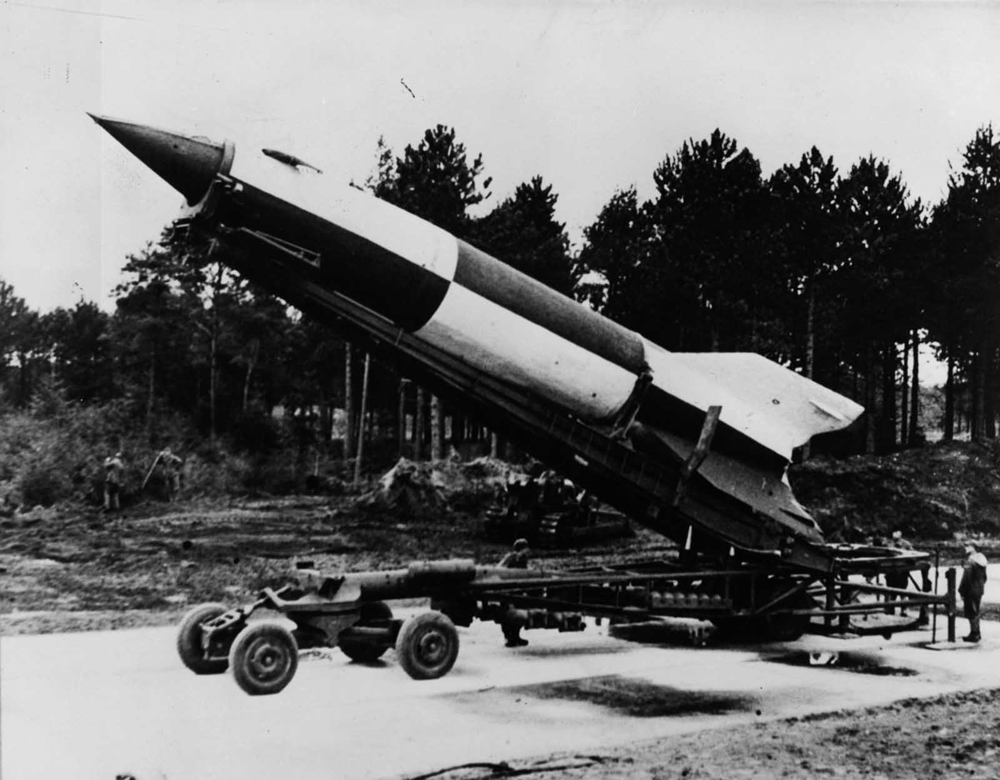
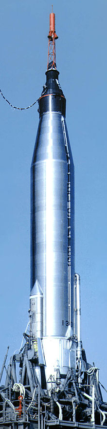
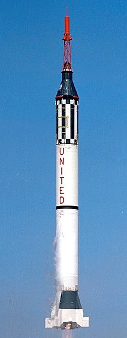
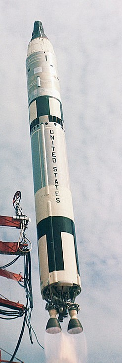
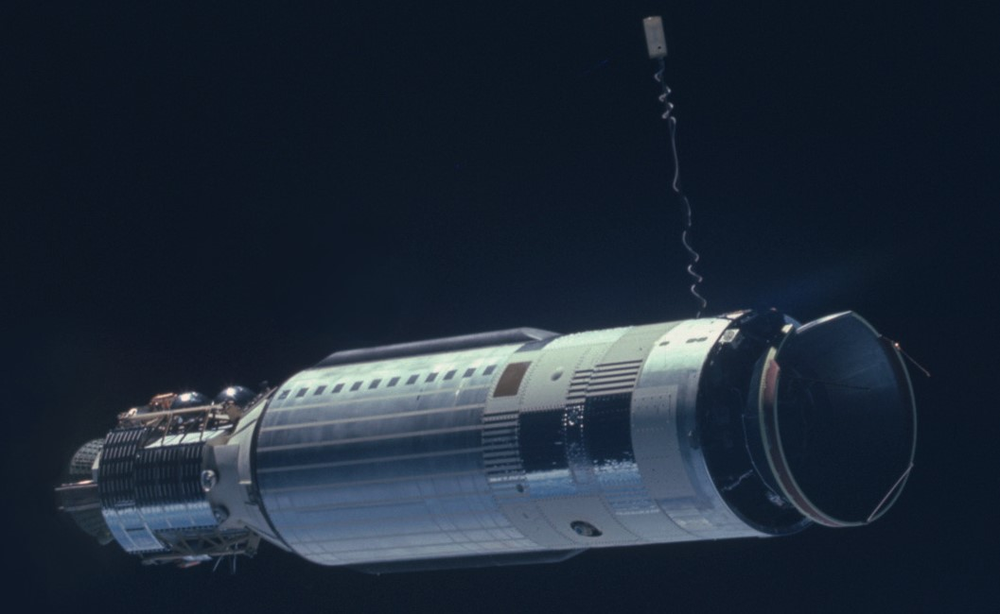

History of Human Space Exploration

Objective(s):
German weapon for striking distant targets with large explosive payloads.
Significance:
After the war, German and American scientists collaborated to adapt V-2 technology for peacetime applications.
Led to the creation of the United States' Redstone Rocket , a larger and more reliable version of the V-2, that would launch America's first human spaceflights.


Objective(s):
Put human in orbit
Observe how the human body responds to being in space.
Bring astronaut & ship back to Earth.
Significance: Redstone rocket:
Alan Shepard becomes first American to go to space
John Glenn becomes first American to orbit the Earth
Atlas rocket:
Achieved longer orbit, allowing observation of space's effect on the human body


Objective(s):
Send 2 men into space for up to 14 days (roughly the amount of time it would take to go to the moon).
Extend observations on how the human body responds to being in space.
Perform extravehicular activities (EVA).
Rendezvous and dock with another spacecraft.
Significance (note that these are firsts for NASA, and do not include Soviet accomplishments):Gemini IV:
Gemini V:
First use of long duration fuel cells, doubling the previously held space-flight duration record, to 8 days.
Gemini VI and Gemini VII:
First spacecrafts to rendezvous and fly within feet of each other in orbit.
Gemini VIII:
First successful rendezvous and docking with a target vehicle (Agena) in orbit.
Gemini XII:
Final crewed Gemini flight -- accomplished all of the above in one mission.